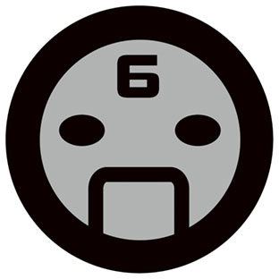
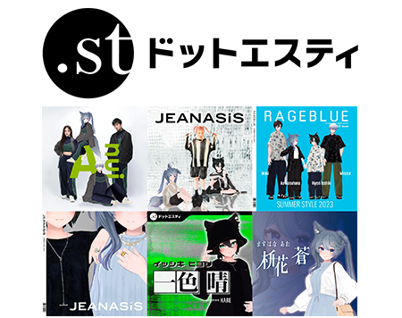
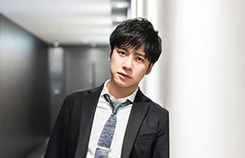
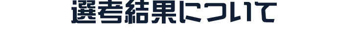

現実世界にとらわれないクリエイターたちの独創的なアバター文化の振興と社会的認知の向上を目的として、
一般社団法人VRMコンソーシアムが、3Dアバターの作品を募集、優れた作品を表彰する大会イベント。
投稿いただいたアバター作品は、今回の評価基準である、
キャラクター性
ファッション性
先進性
において各方面で活躍されるクリエイターの皆様を審査員にお迎えして選考を行い、
優秀作品は2023年12月22日20:00の生放送「アバターアワード2023授賞式」の
バーチャルランウェイにて紹介、表彰いたします。
また、今年のアバターアワードには株式会社HIKKYがプロデュースに入り、
最終審査ノミネート作品を、2023年12月2日から17日まで開催する
「バーチャルマーケット2023 Winter(Vket2023 Winter)」にて展示し、
ユーザーからの人気投票も実施いたします。
ぜひ、みなさまのご参加をお待ちしております！
X（Twitter）でVRMコンソーシアム事務局（https://twitter.com/vrm_pr)をフォローし、
【①アバター部門】
自身のアバターのベストショット、全身がわかる画像を添付して
ハッシュタグ「#AvatarAward2023」を付けて投稿してください。
【②アバターライフ部門】
アバター同士の交流やアバターならではの活動が伝わる画像を添付して、
X（Twitter）上でハッシュタグ「#AvatarAward2023」に加えて「#AvatarLife2023」を付けて投稿してください。
その他以下の条件をお読みいただいた上、ご応募ください。
応募TwitterアカウントにてDMが「すべてのアカウントからのメッセージリクエストを許可する」 に設定されており、VRMコンソーシアム公式アカウント @vrm_pr とダイレクトメッセージが 送受信できるようになっている。もしくはメールアドレスをプロフィールなどに明記し、 事務局から連絡が取れるようになっている。 投稿に使用するアバターの権利を保有している、もしくはそれに準ずる状態である。 アバターメイキングツールに関しては何をご使用いただいてもかまいません。


ヨコオタロウ
ゲームクリエイター。株式会社ナムコ、株式会社ソニー・コンピュータエンタテインメントを経て、 株式会社キャビアへ入社。デザイナーとして経験を積んだ後、 「ドラッグ オン ドラグーン」シリーズや『ニーア ゲシュタルト/レプリカント』のディレクションを担当する。 近年は、スマートフォン向けアプリ『シノアリス』『ニーア リィンカーネーション』や、 漫画『君死ニタマフ事ナカレ』『吉野家兄弟』や舞台の原作など、幅広く活動している。

軍地彩弓
編集者/ファッション・クリエイティブ・ディレクター。 講談社『ViVi』編集部でフリーライターとして活動。 その後、『GLAMOROUS』の立ち上げに尽力する。2008年に現コンデナスト・ジャパンに入社。 クリエイティブ・ディレクターとして、『VOGUE GIRL』の創刊と運営に携わる。 2014年に株式会社gumi-gumiを設立。 『Numero TOKYO』のエディトリアルアドバイザー、ドラマ『ファーストクラス』（フジテレビ系） や映画のファッション監修、Netflixドラマ『Followers』のファッションスーパーバイザー、 企業のコンサルティングなど幅広く活動。
丸山敬太
ファッションデザイナー。1965年東京・原宿生まれ。1997年パリにてコレクションを発表。 2020年K.M Design Studio を設立、代表取締役に就任。近年は、自身のブランド活動だけに留まらず、 ファストファッションから制服、ブランドプロデュースに加え、 ファッションの枠を超え“食”や“住”へ、活動の場を積極的に広げている。 また、2.5次元と呼ばれるゲームやアニメーションへのデザイン提供や、舞台美術、盆踊りの プロデュースなど、ファッションの可能性を常に多角的な視線で捉えている。 来年2024年にブランド30周年を迎える。


.st（ドットエスティ）
「グローバルワーク」「ニコアンド」「ローリーズファーム」など30以上のブランドが集まる
アダストリアグループの公式WEBストア。 ＝全国約1,400店舗のブランド店舗と、
WEBストア共通で使える！貯まる！ドットエスティポイント ＝4,000名を超えるスタッフが
毎日更新する最新コーディネートが集まるスタッフボード ＝お買い物の参考になる、豊富でリアルなお客さまの商品レビュー。
年齢も性別も飛び越えて、幅広いブランドで自由なファッションが楽しめる「楽しいほうのファッションストア」です。
2021年にWEBストアとお店のメリットを融合したOMO型店舗「ドットエスティストア」をオープン。
現在、全国に10店舗展開中。(2023年10月末時点)
webサイト iOS版アプリ Android版アプリ


田口尚平
1991年生まれ、2015年にテレビ東京にアナウンサーとして入社。
スポーツ中継やバラエティ番組を担当。高校生ゲーム大会「STAGE:０」プロデュースを経験した後、
テレビ東京を退職。早稲田大学院ビジネススクールでMBAを取得し、「オタクを極める」という目標を掲げ、
主にゲームやアニメ領域でキャスター/MCとして活躍している。

・受賞者は11月上旬までに連絡を持って代えさせていただきます。
・Xのダイレクトメッセージ、もしくはご登録いただきましたメールアドレス宛てにて、
VRMコンソーシアムより連絡いたします。
以下の状況により無効となる場合がございます。
・受賞で獲得された権利は、他の人に譲渡することはできません。
・受賞者にのみ提供される情報を他者に共有した場合、当選が無効となります。
・受賞者と長らく連絡が取れない場合には、受賞を無効とさせていただく場合もございます。
あらかじめご了承ください。

最終審査にノミネートされたアバター作品はランウェイによるウォーキング動画の収録、
およびVR会場によるアバターモデルの展示を予定しております。
その際、以下の条件を満たす必要がございますので、ご対応が難しい場合、
応募写真のみでのご紹介とさせていただきますのであらかじめご了承ください。
・VRM形式でファイル提出が可能である事
・FBX形式でファイル提出が可能である事
・日本語での意思疎通が可能である方
・18歳未満の場合、保護者の同意を頂ける方


VR時代の3Dキャラクター・アバター使用を想定したプラットフォーム非依存のファイル形式です。
従来の3Dモデルとしてのテクスチャやボーンといった情報に加え、
視線設定など一人称で操作するアバターに必要な情報を扱えるようにし、
環境により異なるスケールや座標系などを統一することで、3Dアバターが配信・ゲームなどあらゆるプラットフォームで使用されることを想定しています。
また、人が操作して人格を演じるアバターの特性を考慮して、
このアバターを他人が使用しても良いか、暴力表現をしても良いか、などアバター特有の権利までもファイルに埋め込むことが可能です。
将来的には3Dモデルの権利保護の機能を兼ね備え、アイテムやアバターの着せ替え販売を実現するなど
3Dモデルが流通する際の標準フォーマットを目指していきます。
ＶＲＭの技術仕様につきましては以下のドキュメントをご覧ください。


2020

2021

2022
Copyright © 一般社団法人VRMコンソーシアム All Right Reserved.